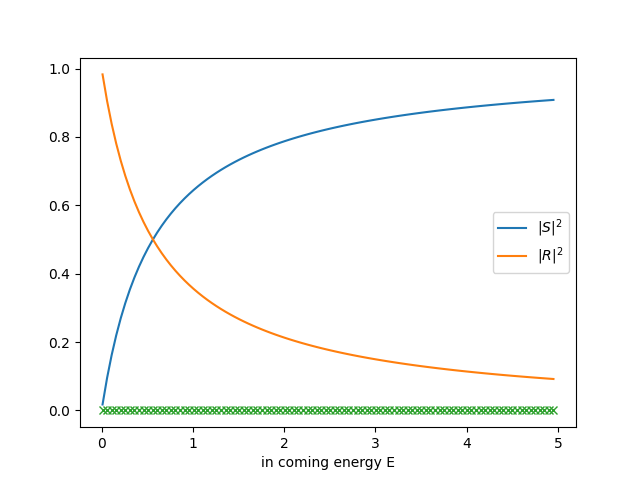

Scattering Summarize
挖个坑，之后慢慢填。
一维方势阱
import numpy as np
import matplotlib.pyplot as plt
def S(E, V0, a):
"""0<E<V0
曾谨言. 量子力学（卷1）, 2007. Eq(3.3.15)
"""
k = np.sqrt(2*E)
K = np.sqrt(2*(V0-E))
S_val = -2j*k/K
S_val /= (1 - (k/K)**2) * np.sinh(K*a) - 2j*k/K*np.cosh(K*a)
S_val *= np.exp(-1j*k*a)
return S_val
def R(E, V0, a):
"""0<E<V0"""
k = np.sqrt(2*E)
K = np.sqrt(2*(V0-E))
R_val = S(E, V0, a) * (1+1j*k/K) * np.exp(1j*k*a - K*a)
R_val -= 1+1j*k/K
R_val /= 1-1j*k/K
return R_val
def f_kk(E, V0, a):
return (S(E, V0, a)-1)*2*np.pi/1j
def f_mkk(E, V0, a):
return R(E, V0, a)*2*np.pi*1j
def sigma_total(E, V0, a):
k = np.sqrt(2*E)
return (np.abs(f_kk(E, V0, a))**2 + np.abs(f_mkk(E, V0, a))**2)/k
def sigma_total_optical_theorems(E, V0, a):
k = np.sqrt(2*E)
return 4*np.pi*f_kk(E, V0, a).imag/k
a = 0.2
V0 = 5
Es = np.linspace(1e-2, V0, 100, endpoint=False)
Ss = []
Rs = []
sigma_total_s = []
optical_theorem_s = []
sigma_kk_s = []
sigma_mkk_s = []
f_kk_s = []
f_mkk_s = []
for ei in Es:
Ss.append(S(ei, V0, a))
Rs.append(R(ei, V0, a))
sigma_total_s.append(sigma_total(ei, V0, a))
optical_theorem_s.append(sigma_total_optical_theorems(ei, V0, a))
sigma_kk_s.append(np.abs(f_kk(ei, V0, a))**2/np.sqrt(2*ei))
sigma_mkk_s.append(np.abs(f_mkk(ei, V0, a))**2/np.sqrt(2*ei))
f_kk_s.append(f_kk(ei, V0, a))
f_mkk_s.append(f_mkk(ei, V0, a))
plt.plot(Es, np.abs(Ss)**2, label=r'$|S|^2$')
plt.plot(Es, np.abs(Rs)**2, label=r'$|R|^2$')
plt.plot(Es, ((np.array(Rs).conjugate())*np.array(Ss) - np.array(Rs)*(np.array(Ss).conjugate())).real, 'x')
plt.xlabel('in coming energy E')
plt.legend()
plt.savefig('fig.png', transparent=True)

参考资料
- 曾谨言. 量子力学（卷1）, 2007.